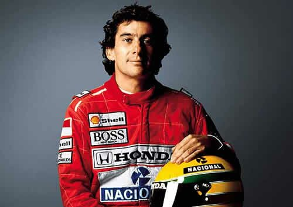
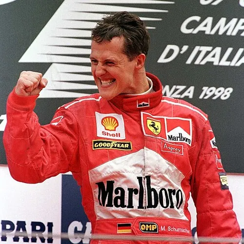
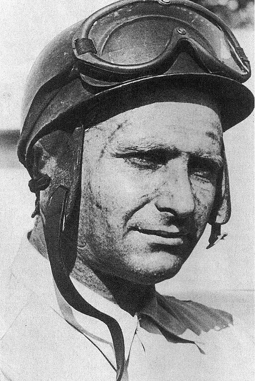
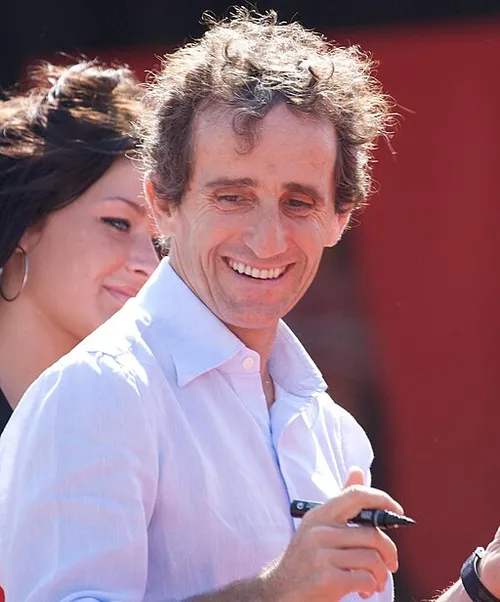

|  |
Ayrton Senna País: Brasil Principais conquistas: Tricampeão mundial de Fórmula 1 (1988, 1990, 1991). Curiosidade: Considerado por muitos como o piloto mais talentoso da história, especialmente por suas habilidades na chuva. |
|  |
Michael Schumacher País: Alemanha Principais conquistas: Sete vezes campeão mundial de Fórmula 1 (1994, 1995, 2000-2004). Curiosidade: Detém muitos recordes na Fórmula 1, incluindo o maior número de títulos conquistados (empatado com Lewis Hamilton). |
|
Lewis Hamilton País: Reino Unido Principais conquistas: Sete vezes campeão mundial de Fórmula 1 (2008, 2014-2015, 2017-2020). Curiosidade: Reconhecido por seu ativismo fora das pistas, lutando por causas sociais e diversidade. |
|
|  |
Juan Manuel Fangio País: Argentina Principais conquistas: Pentacampeão mundial de Fórmula 1 (1951, 1954-1957). Curiosidade: Dominou a Fórmula 1 na década de 1950 com um recorde de títulos que durou por décadas. |
|  |
Alain Prost País: França Principais conquistas: Quatro vezes campeão mundial de Fórmula 1 (1985, 1986, 1989, 1993). Curiosidade: Conhecido como "O Professor" por sua abordagem metódica e estratégica nas corridas. |